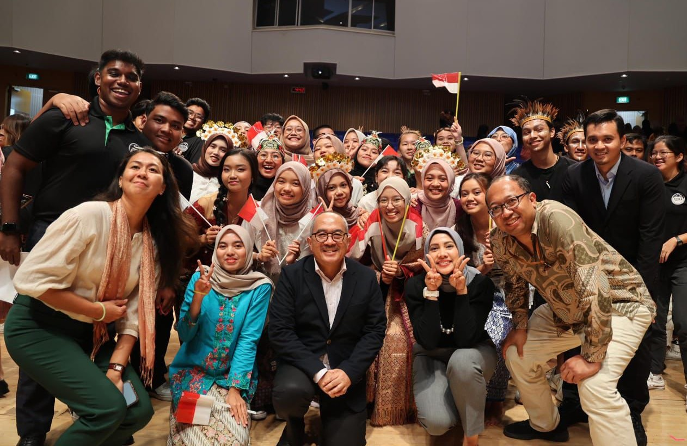
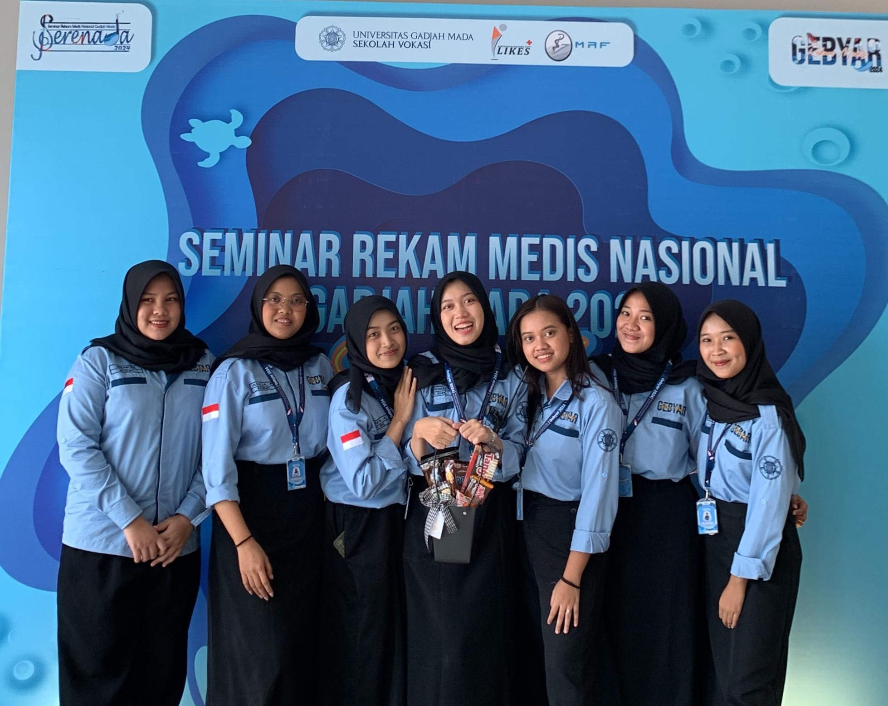
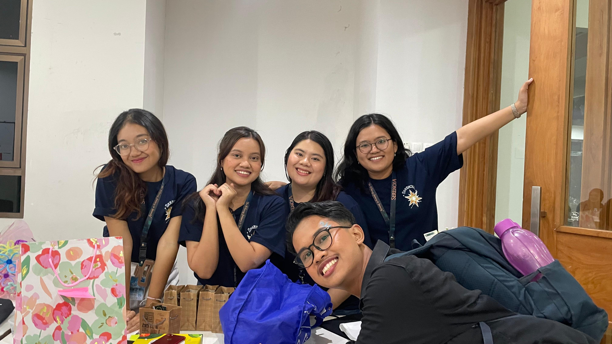
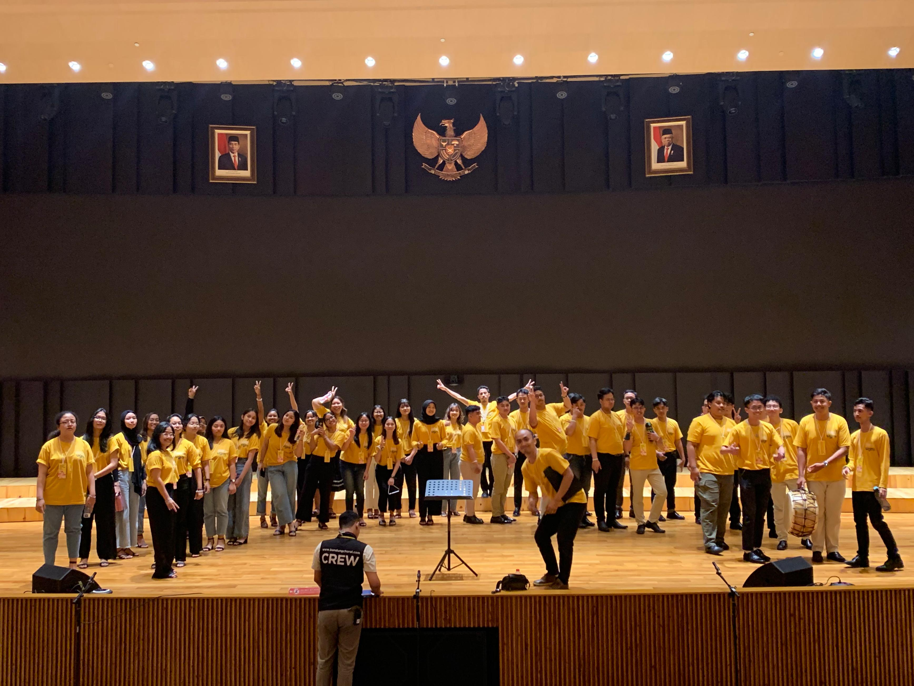

Tentang Saya
Yogyakarta, Indonesia | 081-315-481-383 | mariashelsaviondaputridianthi0804@mail.ugm.ac.id
Pengalaman
Pertukaran Pelajar - Temasek Foundation Specialists' Community Action and Leadership Exchange (TF SCALE) Programme 2024
Republic Polytechnic Singapore, Woodlands, Singapura (Sep - Okt 2024)
- Melaksanakan proyek peningkatan kesehatan lansia di Singapura dan Indonesia
- Membangun jaringan kolaborasi antara mahasiswa Indonesia dan Singapura
Gebyar Rekam Medis Universitas Gadjah Mada 2024 - Staff Divisi Kesekretariatan
Yogyakarta, Indonesia (Feb - Mei 2024)
Grand Concert PSM UGM 2024 - Koordinator Fundraising
Yogyakarta, Indonesia (Mei - Okt 2024)
Prestasi
3rd International Bandung Choral Festival 2023
Bandung, Indonesia (Sep 2023)
- Medali Emas Kategori Mixed Choir
- Medali Emas Kategori Musica Sacra
- Grand Prix dari 60++ peserta
Lomba Paduan Suara Mahasiswa Nasional 2024
Manado, Indonesia (Juli 2024)

- Peringkat ke-6 dari 35 peserta
Pendidikan
Universitas Gadjah Mada
Yogyakarta, Indonesia (Agustus 2022 - Sekarang)